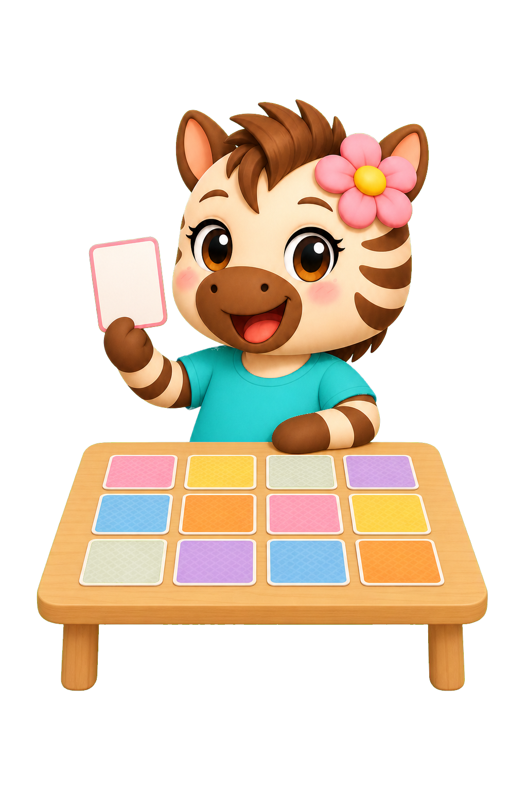
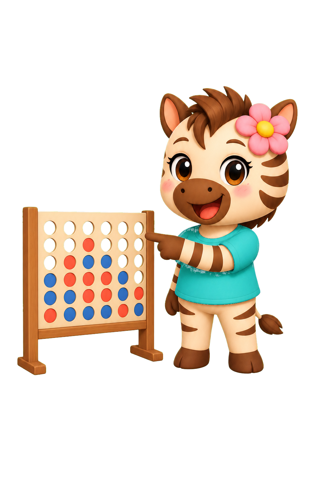

Bellen prikken
Prik de zeepbel met het juiste antwoord.
Je oefent in elk spel de tafels die jij kiest.
Prik de zeepbel met het juiste antwoord.

Zoek de som en het antwoord die bij elkaar horen.

Reken juist en maak als eerste vier op een rij.